第 2 章
視点の操作
この章では、3D ビューの視点を動かす方法と、見え方（投影・ビジュアル スタイル・断面図・表示と非表示）を変える方法を説明します。マウスの動きは、初回起動で選んだ「普段使っている CAD」に合わせてあります。この章は既定の［Inventor 風］で説明します。
2.1 マウスの操作
［Inventor 風］のマウス操作は次のとおりです。ほかのプリセットの割り当ては付録 Bにあります。
| 操作 | 動作 |
|---|---|
| 左クリック | 選択 |
| 左ドラッグ | 範囲選択 |
| 右クリック | コンテキストメニュー |
| 中ドラッグ | 画面移動 |
| Shift+中ドラッグ | オービット |
| 中ダブルクリック | 全体表示 |
| F4+左ドラッグ | オービット |
| F2+左ドラッグ | 画面移動 |
| F3+左ドラッグ | ズーム |
| ホイール | ズーム（前に回すとズームアウト） |
オービット（回転）は、Shift を押しながら中ドラッグします。回転の中心は、カーソルの下の点か、モデルの中心です。
画面移動は、中ドラッグです。
ズームは、ホイールです。カーソルの位置を中心にズームします。ホイールを前（奥）に回すとズームアウトします。
中ボタンをダブルクリックすると、全体表示になります。
マウスにホイールボタンがないときは、F4・F2・F3 を押している間、左ドラッグでオービット・画面移動・ズームができます。
プリセットを切り替える
プリセットは 16 種類あります。初回起動で選んだものは、いつでも変えられます。
ステータスバーの右端のマウスのボタン（
マウス: Inventor 風）を押して、一覧から選びます。ボタンの上にマウスを置くと、そのプリセットの早見表が出ます。図 2-1 ステータスバーの右端。ここでプリセットを切り替えます。 または、リボンの［ツール］タブ → ［オプション］パネル → ［オプション］を開き、［マウスと視点の操作］のページで選びます。
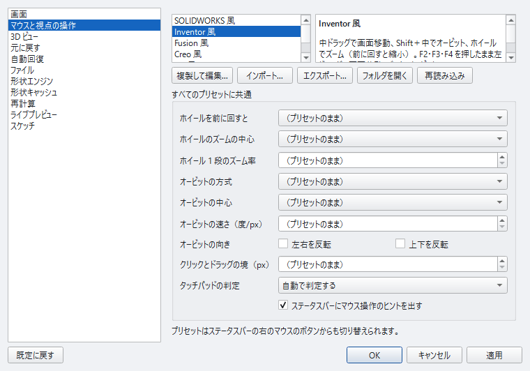
図 2-2 ［オプション］の［マウスと視点の操作］のページ。プリセットを選び、ホイールの向きや回転の速さなど共通の設定を変えられます。
プリセットを選ぶと、キーボードのショートカットもそのプリセットのものに替わります（たとえば ［Inventor 風］では、全体表示が Home、フィレットが F です）。設定の詳しい説明は第 27 章にあります。
2.2 キーでの視点操作
| キー | 動作 |
|---|---|
| Home | ［全体表示］。モデル全体が見えるようにします |
| F6 | ［ホーム ビュー］ |
| F5・Shift+F5 | ［前のビューを表示］・［次のビューを表示］（最大 20 回前まで） |
| Ctrl+1〜Ctrl+7 | 標準ビュー（［正面］・［背面］・［左］・［右］・［上］・［下］・［アイソメ ビュー］） |
| Ctrl+8 | ［ビュー面］。選んだ面に正対します |
| ←・→・↑・↓ | 15° ずつオービットします（Shift を押しながらで 90°、Ctrl を押しながらで 5°） |
| Alt+Left・Alt+Right | 視線のまわりに 90° 回します（画面でモデルが反時計回り・時計回りに回ります）。正面に正対した後で、縦の Z 軸を横にするときなどに使います |
| Shift+F3 | ［窓ズーム］。ドラッグした枠に合わせてズームします |
操作はリボンの［表示］タブの［ナビゲート］パネルにも並んでいます。
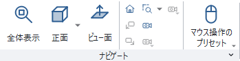
2.3 ViewCube
ビューの右上のキューブをクリックすると、その向きから見ます。面・エッジ・コーナーの 26 か所が押せて、0.2 秒ほどで滑らかに回ります。
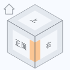
キューブをドラッグすると、オービットします。
左上の家のボタンは、［ホーム ビュー］へ戻ります。
面を正面にしているときは、周りの三角形で隣の面へ移ります。右上の回転の矢印を押すと、モデルが矢印の向きに 90° 回ります（たとえば縦の Z 軸が横になります）。矢印はカーソルが離れていても薄く出ます。Alt+Left・Alt+Right でも同じように回せます（面を正面にしていなくても使えます）。
右クリックのメニューには、ホーム ビューの設定・ビューの回転・直交投影とパースの切り替え・表示モード・ビューの保存と復元があります。
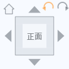
ViewCube の表示・非表示は、［表示］タブの［ウィンドウ］パネルの［ViewCube］で切り替えます。
2.4 標準ビューとホーム ビュー
標準ビューは、［表示］タブの［ナビゲート］パネルの［標準ビュー］▼で選びます。キーは Ctrl+1〜Ctrl+7 です。上方向は Inventor と同じです。


［ホーム ビュー］は、決めておいた「帰る視点」です（F6）。ホーム ビューは変えられます。
視点を決めます。
ViewCube の右クリックメニュー（か、［ナビゲート］パネルのドロップダウン）の［現在のビューをホーム ビューに設定（ビューにフィット）］か［現在のビューをホーム ビューに設定（固定間隔）］を選びます。
［ホーム ビューをリセット］で、初めのホーム ビュー（アイソメ）に戻ります。ホーム ビューはドキュメントに保存されます。
2.5 ビュー面
選んだ面・平面に正対します。スケッチの前に、平らな面を真正面から見たいときに使います。
ビューで面をクリックして選びます（ブラウザで原点平面を選んでもかまいません）。
リボンの［表示］タブ → ［ナビゲート］パネル → ［ビュー面］をクリックするか、Ctrl+8 を押します。

図 2-10 面を選ぶ前（アイソメ ビュー）。 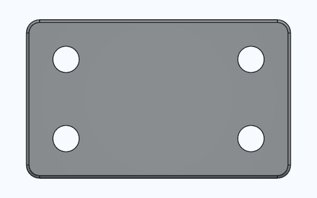
図 2-11 上面を選んで［ビュー面］を実行したところ。上面に正対します。

もう一度実行すると、裏側から見ます。平面・面を選んだときは、スケッチの X が右、Y が上になる向きで正対します。エッジを選んだときは、エッジが画面に水平になります。
2.6 名前付きビュー
よく使う視点には名前を付けて保存できます。［表示］タブの［ナビゲート］パネルにあります。
見たい視点にして、リボンの［表示］タブ → ［ナビゲート］パネル → ［ビューを保存］をクリックし、名前を入力します。
戻すときは［ビューを復元］で名前を選びます。要らなくなったら［ビューを削除］で消します。
保存した視点には、カメラと、そのときの断面図も入ります。名前付きビュー・ホーム ビュー・表示の設定は、ドキュメントを保存すると一緒に保存されます。視点を動かしただけでは、ドキュメントは未保存になりません。
2.7 ズームと前後のビュー
［窓ズーム］は、ドラッグした枠に合わせてズームします（Shift+F3）。
［選択範囲をズーム］は、選んだ面・エッジ・ボディに合わせます。
［前のビューを表示］（F5）と［次のビューを表示］（Shift+F5）で、視点の履歴をたどれます。
2.8 投影法
［表示］タブの［外観］パネルの［投影］で、［直交投影］と［パース］（透視）を切り替えます。どちらでも、カーソル位置のズームと全体表示が合います。［パース］でカーソル位置へズームすると、カーソルの下の形へ寄り、形の手前で止まります（形の中へは入りません）。


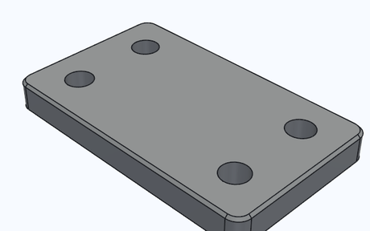
2.9 ビジュアル スタイル
［表示］タブの［外観］パネルの［ビジュアル スタイル］で、見え方を 6 種類から選びます。

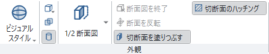
| スタイル | 見え方 |
|---|---|
| ［シェーディング］ | 面を塗りつぶして表示します（エッジの線なし） |
| ［シェーディング、エッジ表示］ | 面を塗りつぶし、エッジの線も表示します（既定） |
| ［シェーディング、隠線エッジ表示］ | 面を塗りつぶし、隠れたエッジを灰色の破線で表示します |
| ［ワイヤフレーム］ | エッジだけを表示します（隠れたエッジも実線） |
| ［ワイヤフレーム、隠線エッジ表示］ | エッジだけを表示し、隠れたエッジは灰色の破線にします |
| ［ワイヤフレーム、表示エッジのみ］ | 見えているエッジだけを表示します |


同じパネルの［透明］はボディを半透明にし、［シルエット エッジ］は曲面の輪郭線を描きます。ワイヤフレーム系のスタイルでは、曲面の輪郭も描きます（視点を止めると更新します）。どのスタイルでも、同じ要素を選べます。ただしワイヤフレーム系では面は選べず、エッジと頂点を選びます。
2.10 断面図
モデルを平面で切って、中を見ます。Inventor と同じ 3 種類です。［表示］タブの［外観］パネルの［断面図］▼にあります。
［1/2 断面図］: 平面の片側を取り去ります。
［1/4 断面図］: 2 つの平面で、1/4 だけを残します。
［3/4 断面図］: 1/4 の角だけを取り去ります。
リボンの［表示］タブ → ［外観］パネル → ［断面図］の▼ → ［1/2 断面図］をクリックします。
切る平面を選びます。ブラウザの原点の平面（［XZ 平面（正面）］など）か、ビューの平らな面を選べます。先に平面を選んでから始めてもかまいません。
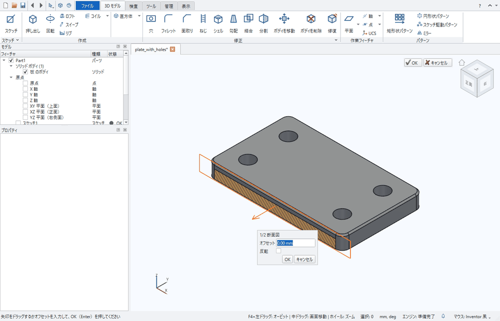
図 2-21 断面図のツール。平面の中央に橙の矢印が出て、ビューにオフセットの欄が出ます。 橙の矢印を左ドラッグして平面を動かします（1・2・5 の刻みで動きます。Shift を押している間は刻みません）。矢印の先の欄の［オフセット］に、式（
10 mm + 2）を入れてもかまいません。取り去る側を変えるときは、［反転］にチェックを入れます。
［OK］（Enter）で断面を残してツールを終えます。Esc で、始める前に戻ります。


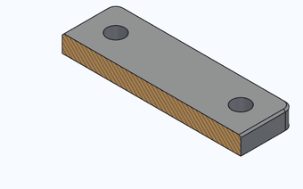

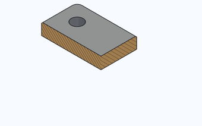

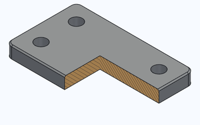
［1/4 断面図］・［3/4 断面図］は、2 つ目の平面も選びます（2 つは直交していなくてもかまいません）。2 つの平面のときは、欄で 1/4 と 3/4 を切り替えられます。
面を選んだ直後（オフセット 0）は、面の外側を取り去るので何も切れません。矢印を材料の中へ引くと切れます。
切り口は、ボディごとの色で塗られ（キャップ）、ハッチングと輪郭線が付きます。［切断面を塗りつぶす］と［切断面のハッチング］で切り替えます。キャップを消すと、切り口から中の面が見えます。
切り取った側と、キャップの奥に隠れた面・エッジは、クリックで選べません。
断面図を表示している間にもう一度コマンドを実行すると、その平面から編集します。［断面を反転］で全部の平面を反転できます。
元の表示に戻すには、［断面図を終了］です（［外観］パネルか、何も選んでいないときの右クリックメニュー）。
フィーチャの編集・寸法の変更・元に戻すで形が変わっても、断面はそのままです。スケッチの編集中も断面は残ります（ほかのボディと同じく半透明）。
2.11 表示と非表示
ボディ・スケッチ・作業フィーチャなどを、一時的に隠せます。［表示］タブの［表示設定］パネルにあります。

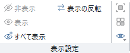
［非表示］・［表示］: 選んだボディ・スケッチなどを隠す・出す。ブラウザの行のチェックでも同じです。
［すべて表示］・［表示の反転］: 全部出す・表示と非表示を入れ替える。
［分離］: 選んだボディだけを表示します。［分離を解除］で戻ります（分離は保存されません）。
［オブジェクトの表示設定］▼: 原点の平面・原点の軸・作業平面・スケッチ・寸法・ボディなど、種類ごとにまとめて出す・隠す。

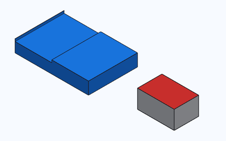

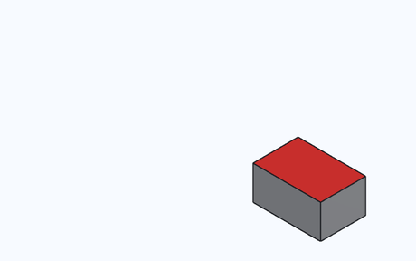

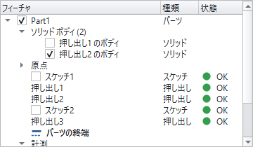
［原点］の平面は、初めは隠してあります（Inventor と同じ）。ブラウザの［原点］のチェックで、半透明の矩形と名前が 3D に出ます。ブラウザの行にカーソルを合わせると、その平面が一時的に出て光ります。新しいスケッチを始めて平面を選ぶ間は、3 つの平面が出るので、ビューで平面をクリックして選べます。
2.12 選択の方法
クリック: 面・エッジ・頂点を選びます。Ctrl を押しながらで切り替え、Shift を押しながらで追加します。
範囲選択: 何もない所から左ドラッグします。左から右に引くと、枠に全部入った要素を選びます（窓。実線の枠）。右から左に引くと、枠に掛かった要素も選びます（交差。破線の枠）。選ぶ種類は、クイック アクセス ツールバーの選択フィルタ（［面を選択］・［エッジを選択］・［頂点を選択］）に従います。
Alt+クリック: 重なった面・エッジ・平面を、手前から奥へ順に選びます。同じ所をもう一度クリックすると、次のものに替わります。